JOINT RESEARCH / EV FIRE SAFETY
한국도로공사
전기차 전소실험 공동 연구과제
01 / PARTICIPATION
연구 참여 범위
전기차 전소시험에서 열화상·가스 데이터를 수집하는 관제 시스템을 개발했습니다.
담당 업무
- C++에서 열화상 카메라 SDK와 가스 센서를 연동했습니다. Python 관제 서버에서는 수신한 센서값에 협력 기관의 경보 알고리즘을 적용하고, 센서값과 판정 결과를 DB에 함께 저장했습니다.
- 전소시험 현장에서는 카메라와 센서를 직접 설치하고 데이터를 수집했습니다. 시험이 끝난 뒤에는 수집 파일을 정리해 알고리즘 개발 기관에 전달했습니다.
공동 연구 결과
- 2026년 8월 28일 실차 시험에는 가스 모듈 8기와 열화상 카메라 6대를 사용했습니다. 공동 연구에서 보고한 실차 시험 결과, L2 경고는 열폭주 15분 23초 전, L3 위험 경보는 12분 47초 전에 발생했습니다.
이현재 · 시티아이랩
02 / OVERVIEW
연구 배경과 목적
본 연구과제는 고속도로 전기차 화재의 조기 감지와 진압 기술 개발을 목적으로 합니다. 배터리 팩 및 실차 전소시험에서 열화상·가스 센서의 반응을 계측하고, 열폭주 발생 시점에 대한 경보 선행시간을 분석합니다. 전체 과제는 복합센서와 상방향 주수장치를 연계한 화재 대응체계 구축을 포함합니다.
03 / SYSTEM
데이터 수집·관제 시스템
C++에서 열화상 카메라 제조사 SDK와 가스 센서를 연동하고, Python 관제 서버를 개발했습니다. 시스템은 C++ 수집 계층에서 전달한 센서 데이터를 처리하고, 협력 기관의 알고리즘 판정 결과를 센서값과 함께 DB에 저장합니다.
센서 → 수집 → 분석 → 저장·관제
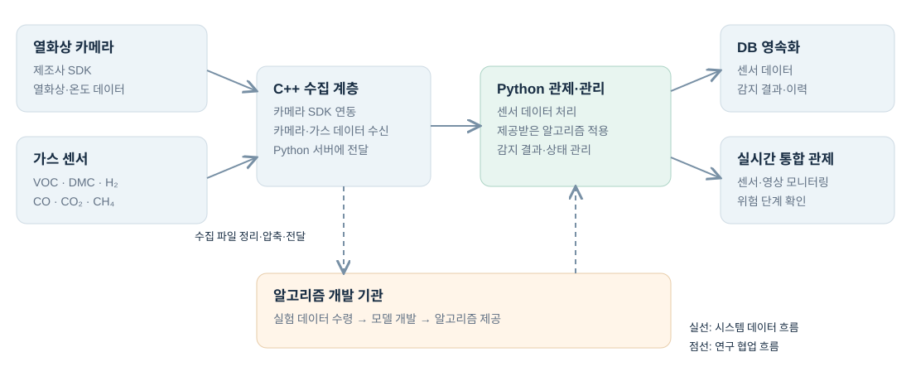
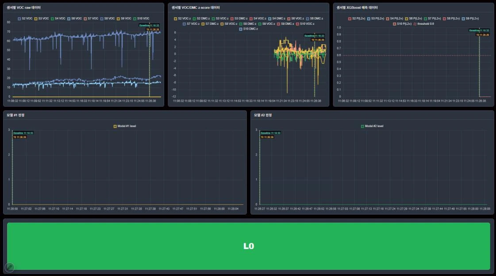
04 / FIELD TEST
현장 시험 구성과 데이터 수집
배터리 팩 시험과 실차 시험 현장에서 카메라와 센서를 직접 설치하고, 화재 진행 중 열화상·가스 데이터를 수집했습니다. 배터리 팩 주변에는 거리와 높이를 달리한 관측 지점을 배치하고, 열화상·가시광 카메라로 온도 분포와 시험 상황을 관측했습니다.
거리·높이에 따른 복합센서 관측
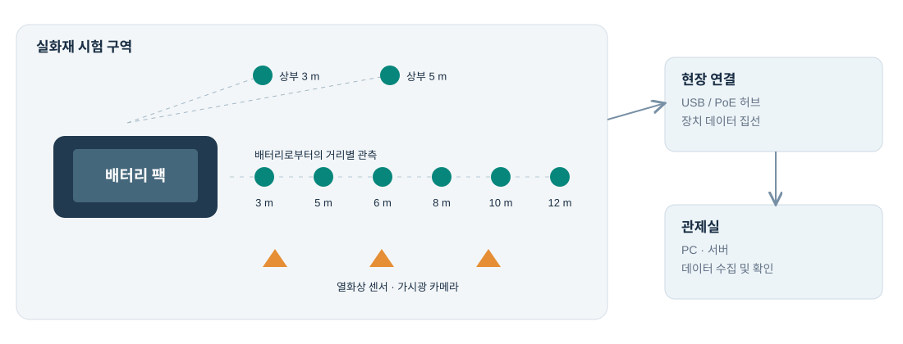
배치도는 관측 지점의 개념을 나타내며 실제 축척을 의미하지 않습니다. 배터리 팩 시험의 배치와 실차 시험의 장비 구성은 구분합니다.
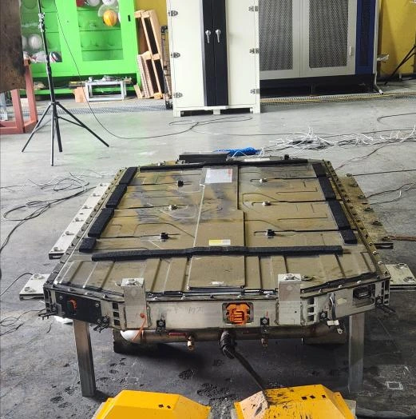
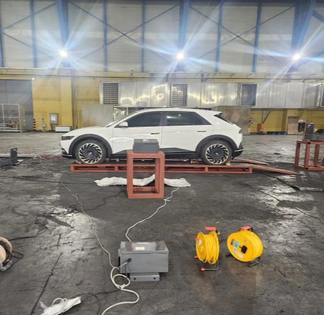
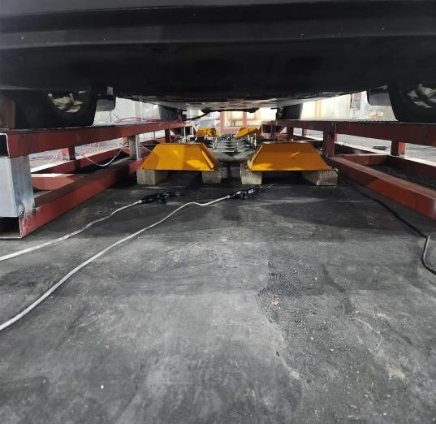
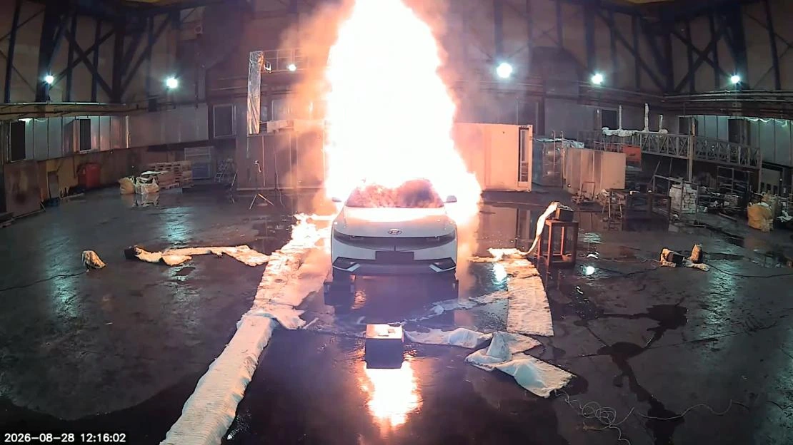
실차 시험과 데이터 전달
2026년 8월 28일 실차 시험에는 가스 모듈 8기와 열화상 카메라 6대를 사용했습니다.
시험이 끝난 뒤 수집 데이터를 파일 단위로 정리·압축하여 알고리즘 개발 기관에 전달했습니다.
05 / METHODS
협력 기관의 경보 모델과 서버 적용
협력 기관은 전소시험 데이터를 바탕으로 경보 알고리즘을 개발하고 모델 평가와 실차 적용 결과 분석을 수행했습니다. 저는 현장 데이터를 전달하고, 제공받은 알고리즘을 Python 관제 서버에 적용했습니다. 관제 서버는 수신한 센서값에 알고리즘을 적용하고 센서값과 판정 결과를 함께 저장합니다.
XGBoost–규칙 기반 L1·L2·L3 경보
이 모델은 가스 6종과 열화상 온도에서 추출한 특징을 입력으로 사용합니다. XGBoost 분류기는 초기 가스 변화를 이용해 L2 경고를 판정합니다. L3 위험 단계에는 배터리 가스의 기준선 대비 상승을 확인하는 규칙을 적용합니다.
가스 6종 + 열화상 → 23개 특징 → L1·L2·L3
센서 관측값으로부터 1초마다 변화량·기울기·동시 상승·누적 변화 등 23개 특징을 산출합니다. 초기 600초 동안 가스 채널별 평균과 표준편차를 계산한 뒤 기준선을 고정하여 이후 변화를 평가합니다.
L1 / 정상
기본 상태입니다. 초기 10분은 기준선 수집 구간으로 경보를 발생시키지 않습니다.
L2 / 경고
XGBoost 경고 확률 0.6 초과 상태가 30초 연속 유지되면 경보가 발생합니다.
L3 / 위험
배터리 가스 z-score 10 초과 상태가 30초 연속 유지되면 경보가 발생합니다.
경보 발생 시각은 연속 유지 조건이 완료된 시점으로 기록하며, 한 번 상승한 경보 단계는 유지합니다.
증거 융합 기반 Stage 1·2·3 판정
증거 융합 방식은 가스와 열화상의 이상 신호를 독립적으로 평가하고, 증거의 종류·강도·지속 시간을 결합하여 Stage 1·2·3을 결정합니다. XGBoost 기반 L1·L2·L3 모델과는 기준선 구성 및 전이 조건이 다른 판정 체계입니다.
Gas / Thermal → Final Fusion
가스 센서별 21개 특징과 카메라별 16개 특징을 이용해 이상을 평가하고 대표 신호로 통합합니다. 가스 기준선은 시험 시작 전에 구성하며 시험 시작 시점에 고정합니다.
이상 → 조기 경보 → 위험 진행
Stage 1은 현재 이상을 포착합니다. Stage 2·3은 가스 종류 수, 열화상 증거, 증거 강도 및 지속 시간을 조합하여 확정합니다.
Stage 2 · 네 경로 중 하나
- 열화상 현재 탐지가 30초 연속 유지됩니다.
- 최근 60초 내 열화상과 가스 1종 이상의 증거가 있습니다.
- 최근 60초 내 가스 3종 이상의 증거가 있습니다.
- 한 가스의 증거 강도 4.0 이상이 30초 연속 유지됩니다.
위 OR 조건이 5초 연속 성립하면 Stage 2를 확정합니다.
Stage 3 · 확대 또는 지속
- 최근 60초 내 열화상과 가스 2종 이상의 증거가 있습니다.
- 최근 60초 내 열화상과 강한 가스 1종 이상의 증거가 있습니다.
- 최근 60초 내 서로 다른 가스 4종 이상의 증거가 있습니다.
- Stage 2 확정 후 120초 이내 새 종류의 증거가 등장합니다.
- Stage 2 실제 판정 조건이 60초 연속 유지됩니다.
Stage 2 확정 후 다섯 경로 중 하나가 5초 연속 성립하면 Stage 3을 확정합니다.
가스 수는 센서 대수가 아닌 가스 종류 수를 의미합니다. 증거를 모으는 시간창과 조건의 연속 유지 시간은 별도 조건으로 적용합니다.
06 / RESULTS
시험 결과
배터리 팩 시험의 경보 선행시간
공동 연구에서는 배터리 팩 시험 4개 차수와 실차 시험의 L2·L3 경보 발생 시점을 열폭주 발생 시점과 비교했습니다. 경보 선행시간은 열폭주 발생 시각에서 경보 발생 시각을 뺀 값입니다. 값이 클수록 열폭주 이전에 경보가 더 일찍 발생했음을 의미합니다.
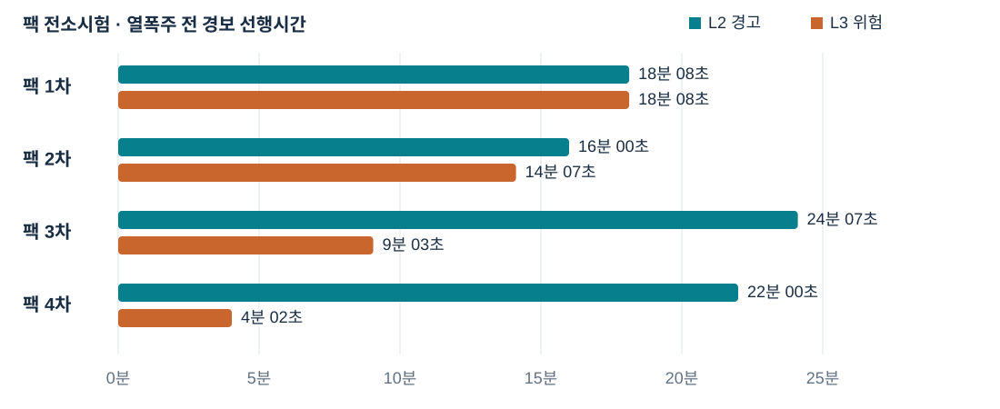
팩 1차 시험에서는 L2와 L3가 동시에 발생했습니다. 4차 시험에서는 L2가 열폭주 22분 전에 발생했지만, L3는 4분 2초 전에 발생했습니다.
| 구분 | L2 경고 | L3 위험 |
|---|---|---|
| 팩 1차 | 18분 08초 | 18분 08초 |
| 팩 2차 | 16분 00초 | 14분 07초 |
| 팩 3차 | 24분 07초 | 09분 03초 |
| 팩 4차 | 22분 00초 | 04분 02초 |
| 실차 · 2026.08.28 | 15분 23초 | 12분 47초 |
제시된 수치는 제한된 전소시험에서 보고된 결과입니다. 운영 환경의 탐지율·오경보율을 평가하려면 정상 상황과 간섭 조건을 포함한 반복 검증이 필요합니다.
실차 시험의 경보 발생 시점
2026년 8월 28일 실차 시험의 다중 센서 1-of-n 융합 결과입니다. L2 경고는 열폭주 15분 23초 전, L3 위험 경보는 12분 47초 전에 발생했습니다.
실차 시험 센서 반응 및 경보 구간
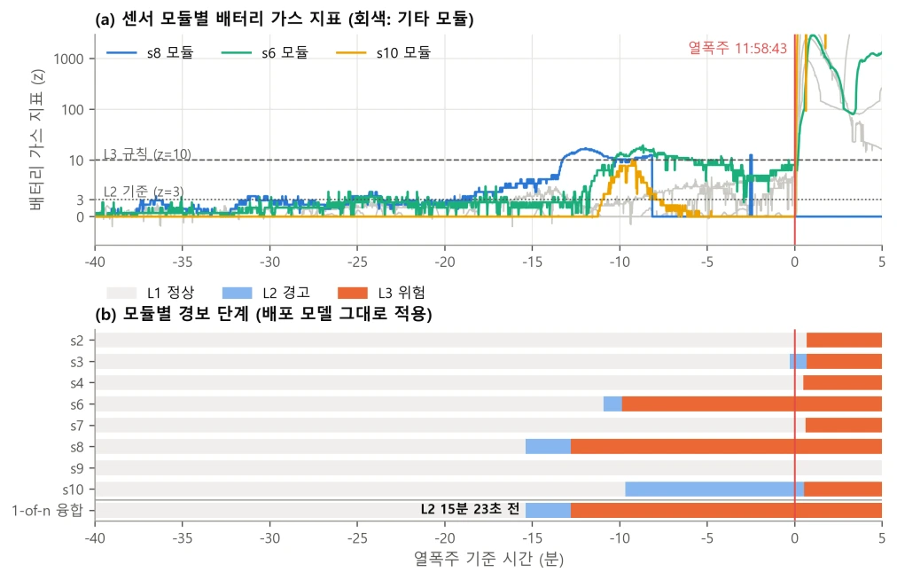
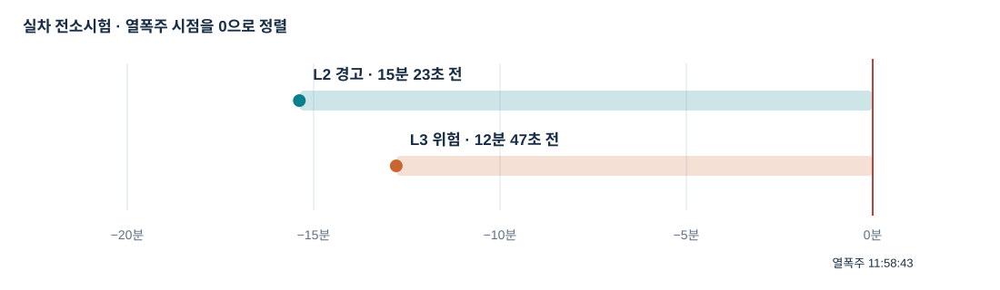
해당 시험 조건에서 확인한 경보 선행시간입니다. 경보 선행시간만으로 주수에 의한 열폭주 지연 효과를 판단할 수는 없습니다.
증거 융합 모델의 단계 전이 결과
Test 1–5는 앞의 배터리 팩·실차 시험 구분과 별개입니다. 아래 전이 시각은 시험별 기록표를 기준으로 합니다.
| 시험 | Stage 1 | Stage 2 | Stage 3 |
|---|---|---|---|
| Test 1 | 13:16:12 | 13:34:37 | 13:54:20 |
| Test 2 | 11:06:05 | 11:07:04 | 11:07:45 |
| Test 3 | 11:17:51 | 11:18:28 | 11:18:49 |
| Test 4 | 10:56:40 | 10:57:12 | 10:57:42 |
| Test 5 | 14:12:02 | 14:12:37 | 미탐지 |
다섯 번의 시험 중 네 번은 Stage 3까지 진행됐고, Test 5는 Stage 2에서 끝났습니다.
Stage 모델은 단일 신호의 이상뿐 아니라 복수 증거의 결합과 지속 여부를 판정에 반영합니다.
Test 1 · Final Fusion
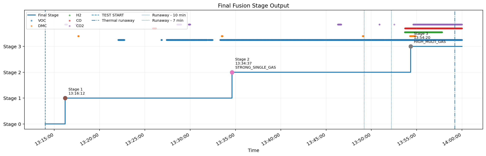
기록표 기준 — Stage 1: 13:16:12 · Stage 2: 13:34:37 · Stage 3: 13:54:20
Test 2 · Final Fusion
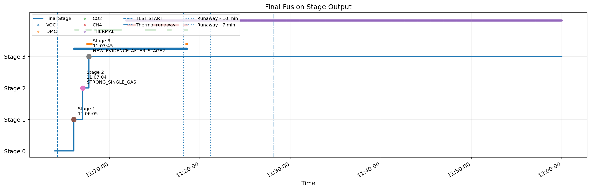
기록표 기준 — Stage 1: 11:06:05 · Stage 2: 11:07:04 · Stage 3: 11:07:45
Test 3–5 센서 증거와 단계 변화
Test 3 · Final Fusion
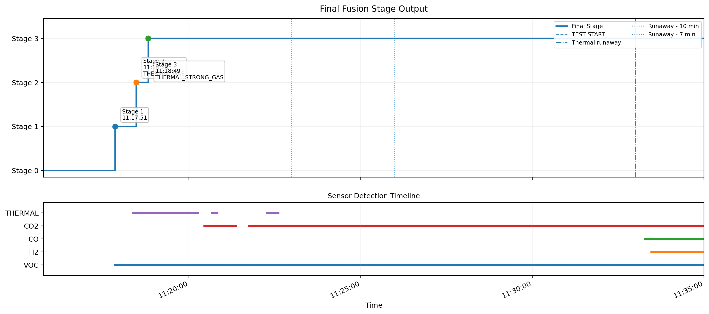
기록표 기준 — Stage 1: 11:17:51 · Stage 2: 11:18:28 · Stage 3: 11:18:49
Test 4 · Final Fusion
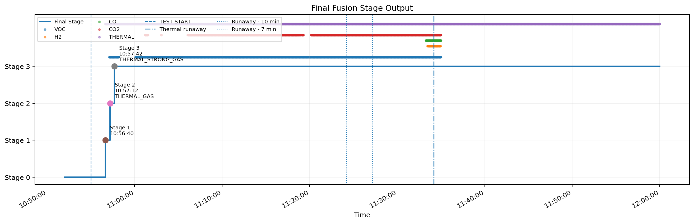
기록표 기준 — Stage 1: 10:56:40 · Stage 2: 10:57:12 · Stage 3: 10:57:42
Test 5 · Final Fusion
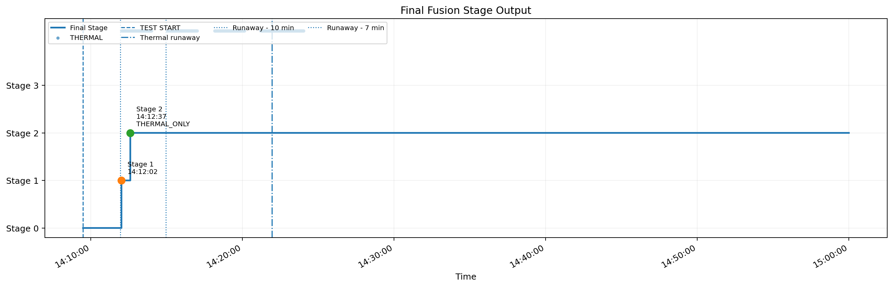
기록표 기준 — Stage 1: 14:12:02 · Stage 2: 14:12:37 · Stage 3: 미탐지
열전대 온도 변화 비교
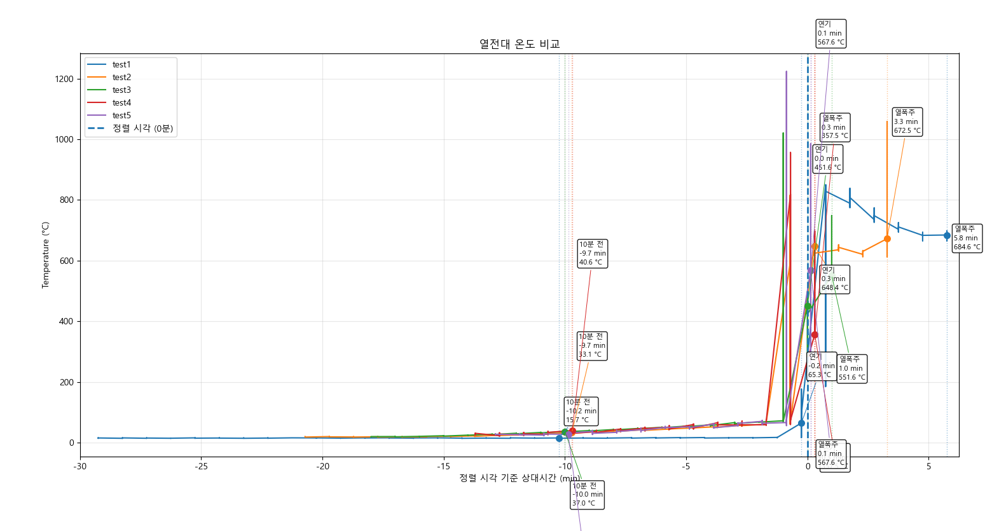
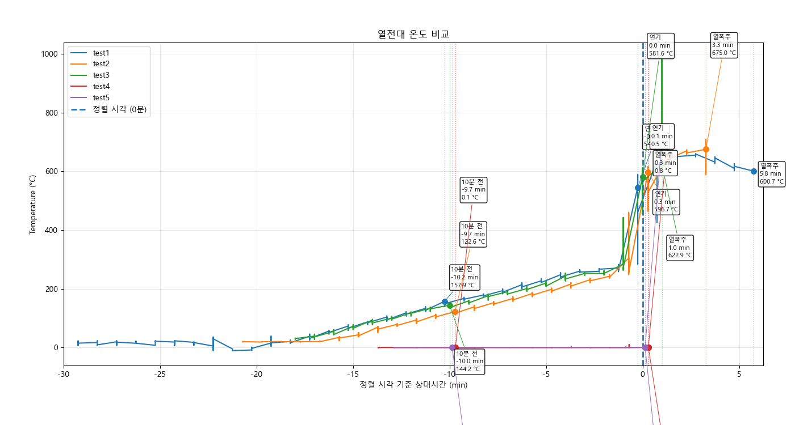
발열체 Test 4·5의 수치는 단위와 측정 상태가 확인되지 않아 정량 비교에서 제외했습니다.